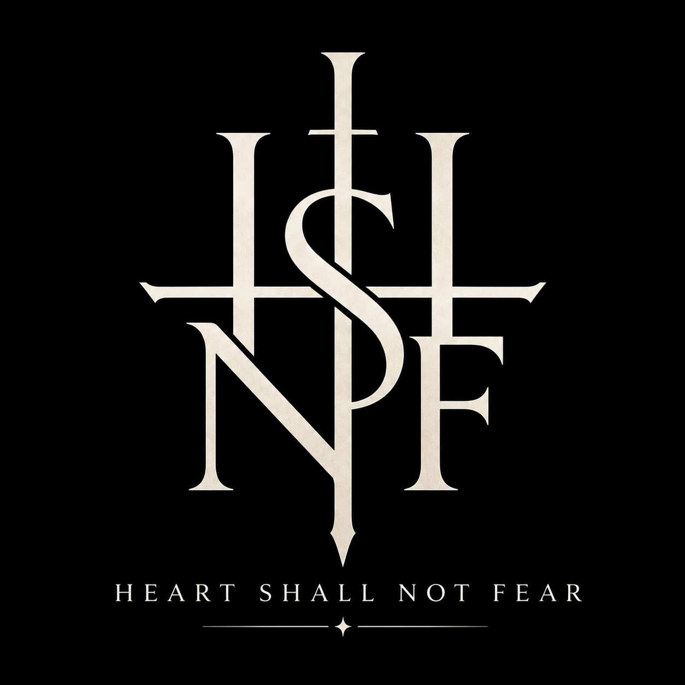
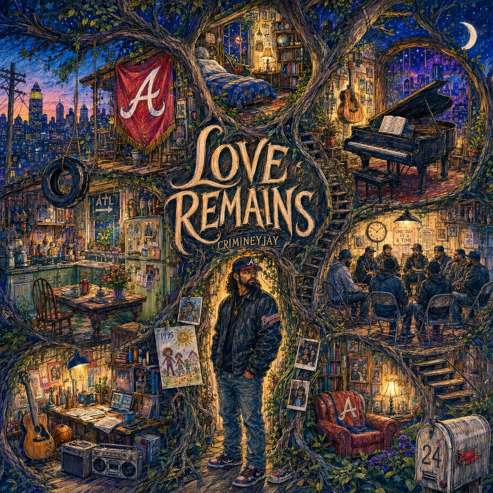
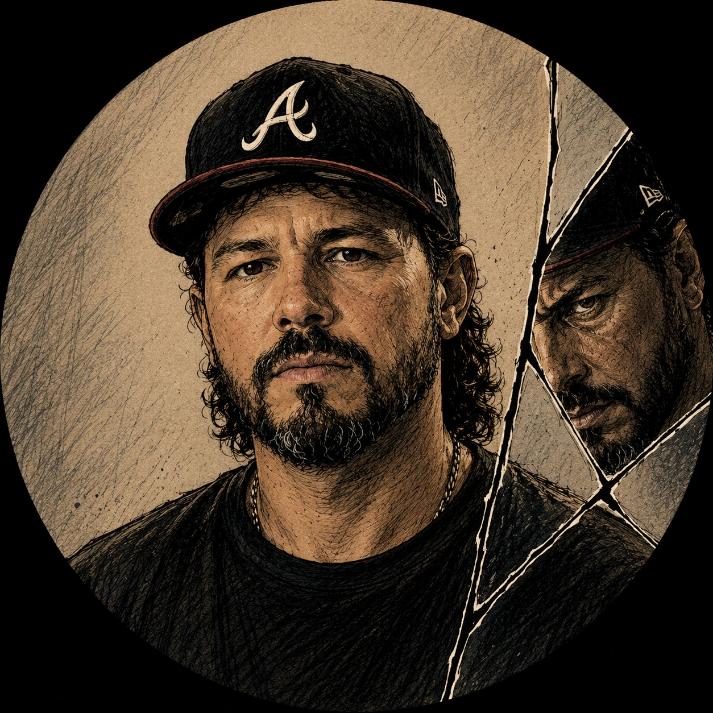
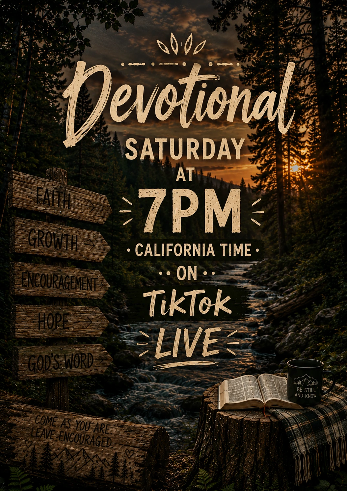

Independent record label
Love Remains is out now.
Nine songs move through Agape, Phileo and Eros. By the end, the question is not which kind of love survived. It is who changed.

“Though an army encamp against me, my heart shall not fear; though war arise against me, yet I will be confident.” Psalm 27:3
Out now
Love Remains

CrimineyJay
Album · Released July 31, 2026
The album begins by naming different forms of love. Across nine songs, those lines stop holding. Brotherhood meets accountability. Boundaries become an act of love. The final song asks whether love changed or the person living through it did.
Available now on Spotify, Apple Music, Amazon Music and YouTube Music.
Artist
CrimineyJay

Love Remains moves through Agape, Phileo and Eros. A new album is in development with a question on the other side of that record: now that we know love, where do we grow from here?
2026 AIMA submissions
CrimineyJay submitted 16 award-category entries to SIQA’s 2026 AI Music Awards. They include Love Remains for AI Album of the Year and the upcoming single “Two for Tuesday” for AI Song of the Year. These are submissions, not award results.
Supported by Heart Shall Not Fear
Elizabeth’s ministry

Elizabeth leads her devotional ministry in service to God. Heart Shall Not Fear is here to support her work. Follow Elizabeth on TikTok for her live devotionals and updates.
About the label
Heart Shall Not Fear
Heart Shall Not Fear is an independent record label releasing CrimineyJay’s music. We want to help artists held back by cost or lack of access find a way to record and release theirs. We support Elizabeth’s devotional ministry and intend to help feed people who are homeless.
Connect
Follow the work.
Artist channels
Label channels
Contact
For label, artist, press or collaboration inquiries, message Heart Shall Not Fear on Instagram.